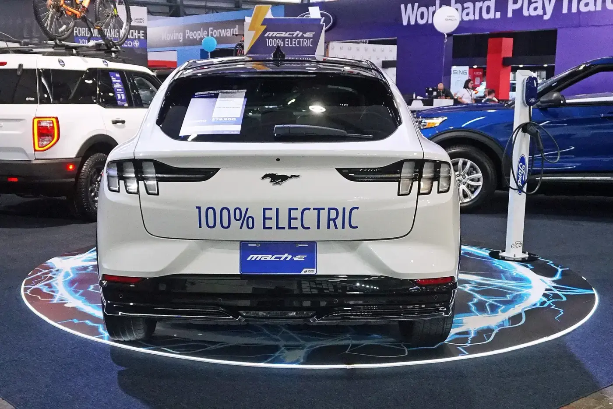
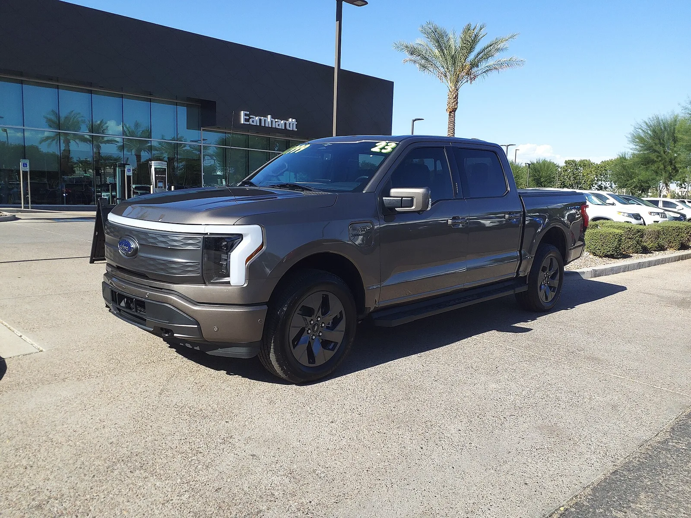
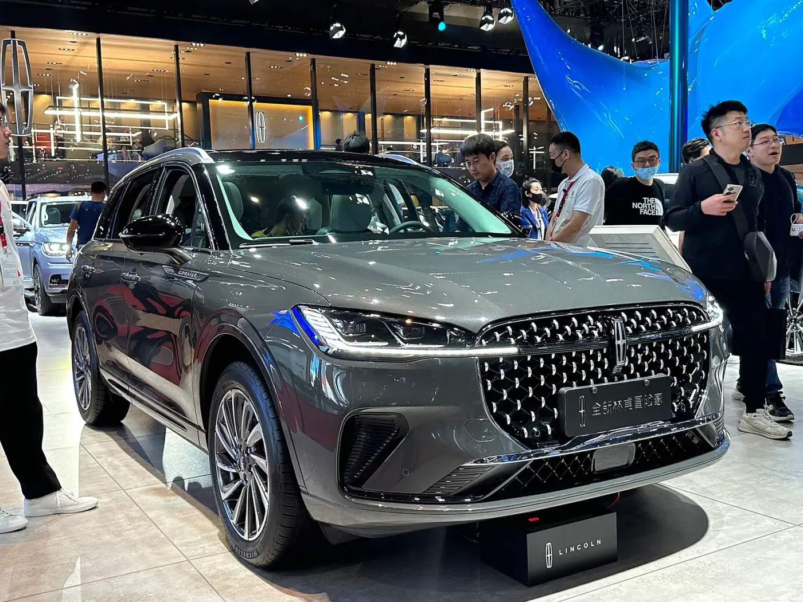
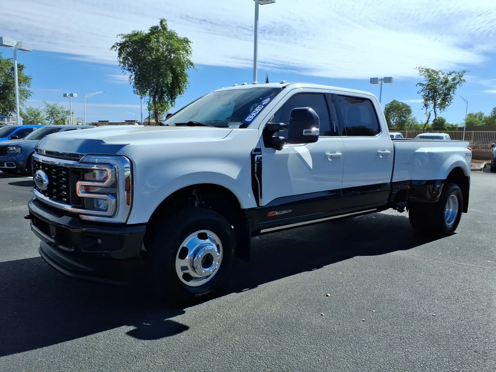
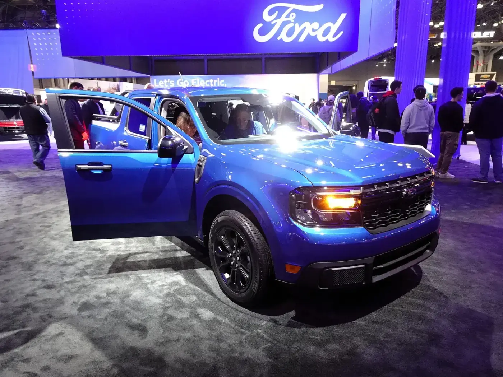
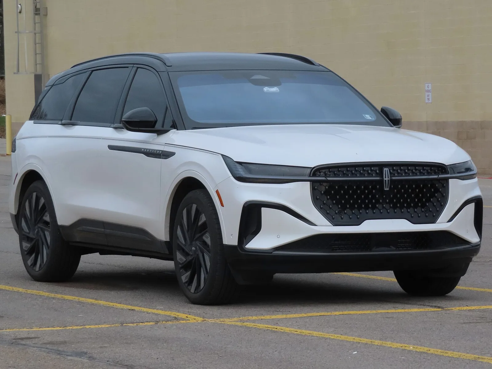
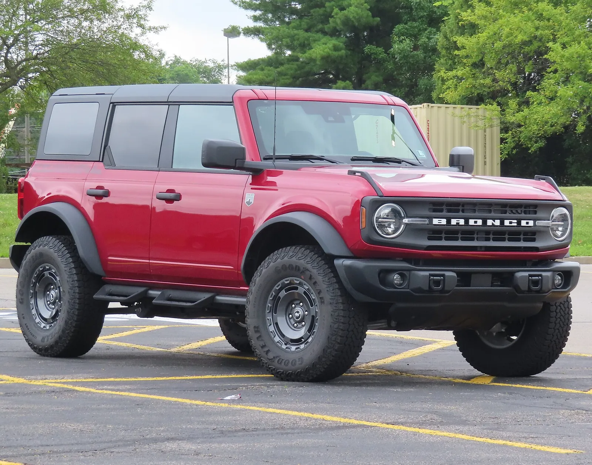
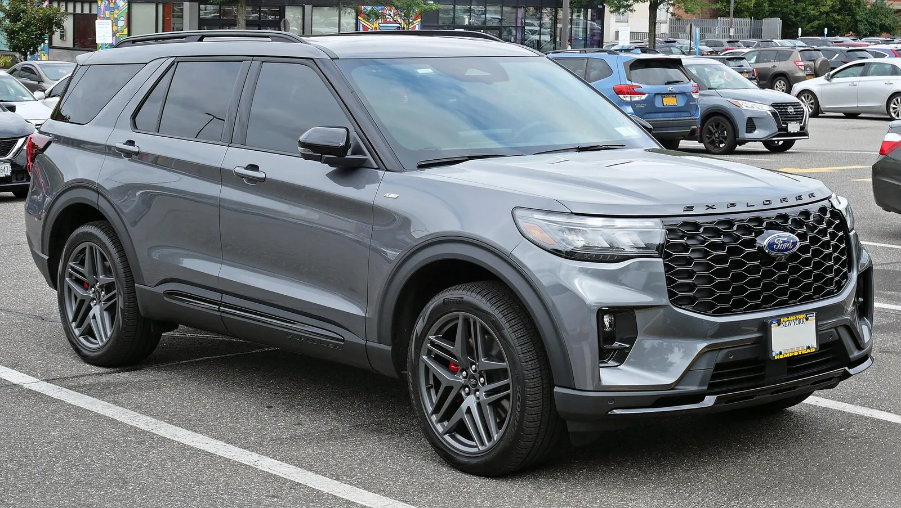
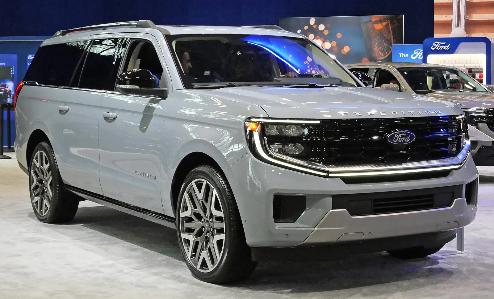

▲ 포드 F-150 리미티드(한국 도로 촬영). F-시리즈는 1~9월 561,508대 ⓒ Damian B Oh (Wikimedia Commons, CC BY-SA 4.0)
"3위는 지켰다. 그런데 몇 대 차이였나?" 포드는 10월 2일(현지시간) 3분기 미국 판매를 50만9764대(-6.6%)로 발표했다. 콕스 오토모티브가 9월 24일 "현대차그룹이 사상 처음 포드를 넘는다"며 내놓은 추정(포드 50만4172대, 현대차그룹 51만1421대)보다 포드 실적이 5592대 많았다. 문제는 그 다음이다. 현대차그룹과의 격차가 매체마다 "1200대 미만"(CNBC 보도로 전해진 수치), "3564대"(오토헤럴드 보도)로 다르게 적혀 있다. 카프리즘은 포드 보도자료 원문과 현대차 미국법인 발표를 직접 열어 어느 숫자가 어떤 기준인지 풀어 봤다.
이 글은 포드 3분기 실적 자체와 "현대차그룹과 얼마나 가까웠나"를 계산하는 데 집중한다. 현대차·기아 개별 실적은 현대차·기아 미국 3분기 실적 기사에서, 콕스 추정과 점유율 흐름은 현대·기아 미국 점유율 3위 기사와 현대차그룹 빅3 진입 전망 기사에서 다뤘다.
1. 포드 3분기 509,764대 — 보도자료로 확인한 숫자
포드 보도자료(10월 2일, 미시간 디어본)는 3분기 총판매를 509,764대, 전년 대비 -6.6%로 적었다. 1~9월 누적은 1,516,279대다. 포드는 감소를 "계획된 포트폴리오 변화", 즉 에스케이프와 코르세어(링컨)의 단계적 단종으로 설명했다. 두 차종을 제외하면 포드 총판매는 "사실상 변화가 없었고", 같은 기간 업계는 약 1% 줄었다는 것이 포드의 주장이다. 포드가 말한 보정 점유율은 자체 산정이라 검증할 수 없지만, 판매량 보정은 표로 맞춰 볼 수 있다. 3분기 총판매에서 에스케이프·코르세어를 빼면 504,637대(전년 506,673대 대비 -0.4%)다. 포드의 "사실상 변화 없음" 설명은 이 계산과 일치한다(카프리즘 계산, 판매표 8쪽 기준).
| 항목 | 수치 | 비고 |
|---|---|---|
| 3분기 총판매 | 509,764대(-6.6%) | 포드 발표 |
| 1~9월 총판매 | 1,516,279대 | 포드 발표 |
| 3분기 소매 점유율(보정) | 약 12.1%(+0.4%p) | 에스케이프·코르세어 제외 기준, 포드 추정 |
| F-시리즈 1~9월 | 561,508대 | 쉐보레 실버라도에 14만 대 이상 앞섬(포드 주장) |
| F-시리즈 3분기 | 203,707대(-1.9%) | 모델별 표(8쪽). 전기 모델 F-150 라이트닝 289대 포함, 제외하면 203,418대로 전년 197,727대 대비 +2.9%(카프리즘 계산) |
| F-시리즈 9월 | 67,448대(+2.4%) | 월간 증가 전환 |
| 슈퍼듀티 3분기 생산 | 110,275대(+4.4%) | 판매가 아니라 생산 수치. 19년 만의 분기 최고 |
| F-시리즈 3분기 생산 | 266,777대(+4.5%) | 생산 수치 |
| 매버릭 하이브리드 3분기 | 27,793대(+59.6%) | 분기 기록. 1~9월 74,300대 |
| 브롱코 3분기 | 38,020대 | 분기 기록. 1~9월 114,956대 |
| 익스플로러 1~9월 | 189,210대(+17.6%) | 익스페디션과 합산 249,481대 |
| 트랜짓 1~9월 | 119,185대 | 상용 밴 1위 유지 |
포드 보도자료 본문에는 3분기 F-시리즈 판매량이 나오지 않고 9월 한 달(67,448대)과 1~9월 누적(561,508대)만 적혀 있다. 모델별 판매표는 PDF 8쪽에 이미지로 들어 있어 텍스트 추출이 되지 않는다. 그 쪽을 이미지로 렌더링해 직접 읽었다. F-시리즈 3분기는 203,707대(-1.9%), 총판매 대비 40.0%다. 슈퍼듀티 110,275대는 여전히 "생산" 수치라 판매와 섞어 쓰면 안 된다.
같은 표에서 총판매 509,764대의 구성도 확정됐다. 포드 브랜드 490,276대(-6.0%)와 링컨 브랜드 19,488대(-18.0%)의 합이다(490,276 + 19,488 = 509,764). 즉 "포드 총판매"에는 링컨이 포함돼 있고, 트럭 줄에는 중대형 트럭(Heavy Trucks) 2,369대가 들어 있다. 이 구조가 뒤에서 다룰 "1200대 미만" 격차의 열쇠다.
F-시리즈 비중(맨 위 사진)은 1~9월 기준 561,508 ÷ 1,516,279 = 37.0%, 3분기 기준 203,707 ÷ 509,764 = 40.0%다. 포드 판매 열 대 중 거의 네 대가 F-시리즈라는 뜻이다. F-150은 9월 말 공급업체 문제로 생산에 차질이 있었으나 포드는 올해 조정 EBIT 가이던스(100억~110억 달러) 안에서 감당할 수 있다고 밝혔다.
2. 에스케이프·코르세어 단종 — 얼마나 빠졌나
포드는 "두 차종을 빼면 판매가 사실상 같다"고 설명했는데, 판매표(8쪽)를 직접 읽으면 이를 실측으로 검증할 수 있다. 전년 3분기 총판매는 545,522대, 올해는 509,764대로 35,758대 줄었다. 이 중 에스케이프가 32,139대에서 4,714대로(-27,425대, -85.3%), 코르세어가 6,710대에서 413대로(-6,297대, -93.8%) 빠졌다. 합계 -33,722대는 총 감소분의 94.3%다.
| 단계 | 계산 | 결과 |
|---|---|---|
| 전년 3분기 포드 | 포드 표 2025 열 | 545,522대(보도된 -6.6%로 역산한 약 545,800대와 0.05% 차이) |
| 총 감소분 | 509,764 - 545,522 | -35,758대(-6.55%) |
| 에스케이프 | 4,714 - 32,139 | -27,425대(-85.3%) |
| 코르세어(링컨) | 413 - 6,710 | -6,297대(-93.8%) |
| 두 차종 합계 | -27,425 + (-6,297) | -33,722대(총 감소분의 94.3%) |
| 두 차종 제외 시 | (509,764-5,127) ÷ (545,522-38,849) - 1 | 504,637대 대 506,673대, -0.4% |
▲ 포드 에스케이프(캐나다 온타리오 촬영). 미국 시장에서는 계획된 단종이 진행 중이다 ⓒ Crisco 1492 (Wikimedia Commons, CC BY-SA 4.0)
포드 보도자료에서 확인할 수 있는 9월 말 재고(총 497.1천 대 중)는 에스케이프 0.5천 대, 코르세어 0대다. 이 두 차종은 사실상 소진 단계라는 신호다. 반면 브롱코 스포츠 35.5천 대, 익스플로러 57.7천 대, F-시리즈 215.4천 대로 주력 모델 재고는 충분히 쌓여 있다(포드 보도자료 PDF 9쪽을 직접 확인. 같은 표에서 브롱코 36.2천 대, 엑스페디션 19.6천 대, 머스탱 마하-E 5.0천 대). 재고는 판매량이 아니라 딜러·공장 재고(gross stock)라는 점을 구분해야 한다.
포드 포트폴리오 변화 분해 — 줄어든 쪽과 늘어난 쪽
단종 두 차종만 보면 이야기가 반쪽이다. 같은 표의 모델별 증감을 겹치지 않게 세 묶음으로 나누면 총 감소분 -35,758대가 정확히 맞아떨어진다. 단종 다음으로 큰 구멍은 전기차 급감이다.
| 묶음 | 구성(전년 대비 증감 대수) | 소계 |
|---|---|---|
| ① 단종 | 에스케이프 -27,425 / 코르세어 -6,297 | -33,722대 |
| ② 전기차 | 마하-E -14,603 / F-150 라이트닝 -9,716 / E-트랜짓 -246 | -24,565대(전기차 30,612 → 6,047대, -80.2%) |
| ③ 나머지(상승) | 매버릭 +7,122 / 익스플로러 +6,285 / F-시리즈(라이트닝 제외) +5,691 / 브롱코 스포츠 +3,928 / 레인저 +2,260 / 노틸러스 +1,362 / 머스탱 +693 / 에비에이터 +498 / 내비게이터 +165 / 브롱코 +162 | +28,166대 |
| ③ 나머지(하락) | 익스페디션 -1,984 / 트랜짓(E-트랜짓 제외) -1,997 / E-시리즈 -1,486 / 중대형 트럭 -170 | -5,637대 |
| 합계 | -33,722 + (-24,565) + 28,166 + (-5,637) | -35,758대(총 감소분과 일치) |
라이트닝은 F-시리즈에, E-트랜짓은 트랜짓에 이미 포함된 모델이라 이중 계산을 피하려고 ②로 옮기고 해당 줄에서 뺐다(F-시리즈 -4,025대에서 라이트닝 -9,716대를 빼면 +5,691대, 트랜짓 -2,243대에서 E-트랜짓 -246대를 빼면 -1,997대). 해석하면 포드의 3분기는 "단종과 전기차에서 -58,287대가 빠지고, 내연·하이브리드 주력이 +22,529대(③ 순증)를 메운" 구조다. 이 중 단종은 포드가 계획한 감소고, 전기차 급감은 계획이라기보다 시장 수요 부진에 가깝다고 보이나 포드가 사유를 밝히지 않았으므로 원인은 단정하지 않는다. 하이브리드 전체는 55,177대에서 44,308대로 -19.7%, 내연기관은 459,733대에서 459,409대로 -0.1%였다. 매버릭 하이브리드가 늘었는데도 하이브리드 전체가 준 것은 에스케이프 하이브리드가 사라진 영향으로 읽힌다(추측, 포드 표에는 에스케이프 파워트레인 구분이 없다).
▲ 브롱코 스포츠(왼쪽)와 에스케이프(오른쪽). 두 차종은 같은 하부 구조를 쓴다. 3분기 브롱코 스포츠는 34,751대(+12.7%), 에스케이프는 4,714대(-85.3%)였다 ⓒ Nathan Dimartino (Wikimedia Commons, CC BY-SA 4.0)

▲ 포드 머스탱 마하-E(코스타리카 전시 차량). 3분기 5,574대로 전년 20,177대 대비 -72.4% ⓒ Mariordo (Wikimedia Commons, CC BY-SA 4.0)

▲ 포드 F-150 라이트닝(파일 정보상 2023년형 라리아트, 미국 애리조나 딜러 촬영). 3분기 289대로 전년 10,005대 대비 -97.1% ⓒ HJUdall (Wikimedia Commons, CC0)

▲ 링컨 코르세어(중국 전시장 촬영 차량). 미국 판매 사양과 세부가 다를 수 있다 ⓒ Dinkun Chen (Wikimedia Commons, CC BY-SA 4.0)
3. 현대차그룹 쪽 숫자 — 제네시스가 문제다
현대차 미국법인 보도자료(10월 1일, PR Newswire)가 밝힌 3분기 판매는 246,896대(+3%)이며 9월은 77,439대(+9%), 1~9월은 697,464대(+3%)다. 이 보도자료에는 제네시스 판매량이 한 줄도 없다. 즉 246,896대는 현대 브랜드 단독이다. 기아 미국법인은 3분기 236,659대(+8%)를 발표했다. 두 숫자를 더한 483,555대가 "제네시스 제외" 합산이다.
| 구분 | 판매량 | 출처·성격 |
|---|---|---|
| 현대 브랜드 | 246,896대 | 현대차 미국법인 보도자료(직접 확인) |
| 기아 | 236,659대 | 기아 미국법인 발표(앞선 기사에서 확인) |
| 현대+기아 (제네시스 제외) | 483,555대 | 직접 합산 |
| 제네시스(3분기) | 22,645대 | 굿카배드카 월별 집계 합(7월 6,947 + 8월 7,635 + 9월 8,063). 공식 발표 아님 |
| 현대차그룹 (제네시스 포함) | 506,200대 | 483,555 + 22,645. 검색으로 확인한 보도의 "50만6200대, +5.4%"와 일치 |
📍 제네시스 공식 수치는 여전히 확인하지 못했다
현대차 미국법인 보도자료(PR Newswire)와 제네시스 뉴스룸 목록(9월 보도자료)을 열어봤지만 3분기 제네시스 판매량 공식 발표문은 찾지 못했다. 위 22,645대는 굿카배드카 집계이며, 이 값을 쓰면 그룹 합계가 한 언론 보도의 506,200대와 정확히 맞고(483,555 + 22,645) 포드와의 차이가 오토헤럴드의 3,564대와도 일치한다. 서로 다른 두 보도가 같은 값에 닿았으므로 신뢰도가 높지만, 어디까지나 공식 확정치는 아니다. 같은 집계의 전년 3분기(2025년 7,364 + 6,441 + 6,857 = 20,662대)와 비교하면 +9.6%로, CNBC의 "+6%"와는 차이가 있다. 집계 기준 차이로 보이며 공식 수치로 확인하지는 못했다.
이번 재탐색에서 Yahoo Finance 게재본(Quartz 기사)을 열어 보니 이 기사도 제네시스는 따로 적지 않고 현대차 246,896대, 기아 236,659대, 그룹 506,200대(+5.4%)만 제시했다. 그룹 합계에서 현대+기아를 빼면 22,645대가 되는데, 이는 굿카배드카 집계와 정확히 같으므로 제네시스 3분기는 "공식 발표가 아니라 그룹 합계로부터의 역산값"이라고 정리하는 것이 정확하다. 같은 방식으로 전년 3분기를 역산하면 그룹 약 480,266대에서 현대+기아 458,706대(239,069 + 219,637)를 뺀 약 21,560대이고, 22,645대는 이에 대해 약 +5.0%다. CNBC의 제네시스 "+6%"와 반올림 범위에서 근접하다(그룹 +5.4%의 반올림 오차에 민감하므로 단정하지 않는다). Genesis Motor America 보도자료·현대 미디어에서 3분기 판매량 발표문은 찾지 못했다.
4. 격차 계산 — 3564대인가, 1200대 미만인가
가장 단순한 계산부터 하자. 포드 509,764대에서 현대차그룹 506,200대를 빼면 3,564대, 포드 판매의 0.70% 수준이다. 제네시스를 빼면 격차는 509,764 - 483,555 = 26,209대로 훨씬 벌어진다. 어느 쪽이든 포드가 3위를 지켰다. 하지만 "1200대 미만"이라는 CNBC 보도 수치는 이 계산(포드 총판매 기준)과는 다르다. 포드 경량차 507,395대를 기준으로 하면 506,200대와의 격차가 1,195대로 맞아떨어진다. 이번에 포드 판매표로 이 산식이 맞다는 것을 확인했다(아래 설명).
| 비교 기준 | 포드 | 현대차 측 | 격차 |
|---|---|---|---|
| ① 현대+기아(제네시스 제외) | 509,764대 | 483,555대 | 26,209대 |
| ② 그룹(제네시스 22,645대 포함) | 509,764대 | 506,200대 | 3,564대 |
| ③ CNBC 보도 인용(경량차 기준 추정) | 507,395대(경량차, -6.6%) | 506,200대(+5.4%) | 1,195대(Yahoo Finance 게재본 확인, 포드 표 8쪽과 산식 일치) |
| ④ 콕스 추정(9월 24일) | 504,172대 | 511,421대 | 현대차그룹 +7,249대 |
| ⑤ 콕스 추정 대 실제의 포드 오차 | 504,172 → 509,764 | - | 포드 +5,592대 |
③이 ②보다 2,369대 작은 이유는 이제 확정할 수 있다. 포드 판매표(8쪽)의 트럭 줄에 "Heavy Trucks" 2,369대(전년 2,539대, -6.7%)가 따로 있고, 총판매 509,764대는 이를 포함한다. Yahoo Finance 게재본(Quartz 기사)은 중대형 트럭이 별도 분류라 경량차 합계에서 제외된다며, 포드 경량차 507,395대(-6.6%)를 그룹 506,200대(+5.4%)와 비교해 "1,200대 미만(1,195대)"이라고 적었다. 509,764 - 2,369 = 507,395이고, 전년도 545,522 - 2,539 = 542,983 대비 -6.55%로 보도의 -6.6%와도 맞는다. 즉 두 격차는 같은 분기를 서로 다른 범위로 센 것이다. 제네시스를 약 25,014대로 보는 대안(현대차 쪽 +2,369대)은 제네시스 +6% 보도와 어긋나 배제된다. 다만 이 비교가 업계의 통상 관행인지, 어느 매체가 처음 이렇게 계산했는지는 확인하지 못했다.

▲ 포드 슈퍼듀티 F-350 킹랜치 듀얼리. 슈퍼듀티는 F-시리즈에 속하며, 포드 재고표에는 중대형(메디엄/헤비) 트럭이 별도 줄로 나온다 ⓒ HJUdall (Wikimedia Commons, CC0)
5. 기준이 갈리는 지점 — 제네시스와 포드의 대형 상용
| 변수 | 어느 쪽 숫자가 달라지나 | 영향 크기 | 확인 상태 |
|---|---|---|---|
| 제네시스 포함 여부 | 현대차 측 | 22,645대(= 격차 26,209대 → 3,564대) | 집계 수치, 공식 확인 못 함 |
| 제네시스 판매량 출처(공식 vs 집계) | 현대차 측 | 수백~수천 대 가능성 | 집계 간 차이 미해결 |
| 포드 메디엄/헤비 트럭(F-650·750 등) 포함 여부 | 포드 측 | 2,369대를 빼면 3,564대가 1,195대가 됨(포드 경량차 507,395대) | 포드 표 8쪽(Heavy Trucks 2,369대)과 Yahoo Finance 게재본 보도로 확인 |
| 링컨 포함 여부 | 포드 측 | 링컨 19,488대(총판매의 3.8%) | 포드 브랜드 490,276 + 링컨 19,488 = 509,764로 총판매가 링컨을 포함함을 표로 확인 |
| 월/분기 혼동 | 양쪽 | 9월 한 달 격차 vs 분기 격차 | 한 보도는 "9월 한 달 1,195대 차"로 전달 |
포드 보도자료 재고표에도 "Medium/Heavy 3.7천 대"가 별도 줄로 있다. 판매표의 Heavy Trucks(2,369대)는 이 중대형 트럭 판매이며, 슈퍼듀티(F-250~550)는 F-시리즈에 속해 따로 빠지지 않는다. 그래서 "경량차" 합계는 포드 총판매 - Heavy Trucks로 정의되고 격차는 507,395 - 506,200 = 1,195대가 된다. 한 보도(Headlight)는 "9월 한 달 포드가 현대차그룹을 1,195대 차로 앞섰다"고 전했는데, 경량차 기준 분기 격차와 숫자가 같아 월간과 분기가 섞인 서술로 보이며 이 월간 수치의 근거는 확인하지 못했다. CNBC 원문과 Quartz 원문(qz.com)은 403이라 열람하지 못했고, Yahoo Finance와 팁인사이트 게재본으로 같은 수치를 확인했다.
🔍 독자가 기억할 판정 기준
포드가 3위인지는 "제네시스를 넣고 같은 범위의 포드 합계와 비교했는가"로 갈린다. 카프리즘 계산으로는 어느 기준에서도 포드가 앞섰고, 가장 박빙인 기준(②)에서 0.7%다. 포드의 모델별 표로 두 범위(총판매·경량차)는 확정됐다. 남은 불확실성은 제네시스 22,645대가 공식 확정치가 아니라는 점 하나라서, "몇 대 차"를 말할 때는 어느 범위(총판매 3,564대, 경량차 1,195대)인지 함께 적어야 한다.
6. 격차가 이렇게 줄어든 이유 — 포드 -6.6%, 현대차그룹 +5.4%
전년 3분기 포드는 표에서 545,522대로 확인된다. 현대차그룹은 506,200 ÷ 1.054 = 약 480,266대로 역산한다(제네시스 포함, 반올림 오차 있음). 작년에는 포드가 약 65,256대 앞섰고 올해는 3,564대로 줄었다. 한 해 사이에 격차가 약 61,700대 줄어든 것이다. 이 중 35,758대는 포드의 실측 감소분이고 나머지 약 25,934대는 현대차그룹의 증가분이다. 보도된 -6.6%로 역산한 약 36,000대와 실측 35,758대는 거의 같다. 줄어든 격차의 약 58%는 포드가 빠진 몫이고 약 42%는 현대차그룹이 따라붙은 몫이다.
| 항목 | 2025 3분기(역산) | 2026 3분기 | 변화 |
|---|---|---|---|
| 포드 | 545,522대(포드 표) | 509,764대 | -35,758대 |
| 현대차그룹(제네시스 포함) | 약 480,266대(역산) | 506,200대 | 약 +25,934대 |
| 포드 우위 | 약 65,256대 | 3,564대 | 약 -61,692대 |
분기별 격차 추이 — 2025년 3분기부터 2026년 3분기까지
3분기 한 번의 숫자로는 흐름을 못 본다. 포드와 현대차그룹의 분기별 격차를 공식 발표로 확인되는 현대 브랜드 + 기아(제네시스 제외) 합산으로 이어 붙였다. 제네시스는 분기별 공식 수치가 없어 뺐다. 제네시스를 넣은 3분기 수치(3,564대)는 앞 절에 있다.
| 분기 | 포드 | 현대 | 기아 | 현대+기아 | 격차(포드 우위) | 격차율 |
|---|---|---|---|---|---|---|
| 2025 3분기 | 545,522 | 239,069 | 219,637 | 458,706 | 86,816 | 15.9% |
| 2025 4분기 | 545,216 | 223,337 | 약 216,007(역산) | 약 439,344 | 약 105,872 | 19.4% |
| 2026 1분기 | 457,315 | 205,388(역산) | 207,015 | 412,403 | 44,912 | 9.8% |
| 2026 2분기 | 549,200(역산) | 245,180 | 223,712(역산) | 468,892 | 80,308 | 14.6% |
| 2026 3분기 | 509,764 | 246,896 | 236,659 | 483,555 | 26,209 | 5.1% |
격차율은 격차 ÷ 포드 판매다. 포드 2025년 4분기(545,216대)와 2026년 1분기(457,315대)는 포드 발표를 보도한 검색 결과 기준이고, 2분기는 상반기 1,006,515대에서 1분기를 뺀 549,200대다(2분기 -10.3% 보도와 일치). 현대는 4분기 223,337대, 2분기 245,180대(전년 235,726대), 상반기 450,568대를 보도자료 게재본에서 확인했고 1분기는 450,568 - 245,180 = 205,388대로 역산했다. 기아는 1분기 207,015대(전년 198,850대)와 상반기 430,727대를 원문에서 확인했고, 2분기는 430,727 - 207,015 = 223,712대로 역산했다. 기아의 2025년 3분기 219,637대는 검색 결과로 확인했을 뿐 원문을 열지 못했다. 기아 2025년 4분기는 연간 852,155대(검색 결과)에서 상반기 416,511대와 3분기를 뺀 약 216,007대 역산값이라 가장 불확실하다.
읽는 법은 세 가지다. 첫째, 포드는 분기별 편차가 커서(1분기 457,315대, 2분기 549,200대) 분기끼리 곧바로 비교하기 어렵고 같은 분기끼리 봐야 한다. 같은 3분기끼리는 격차가 86,816대에서 26,209대로 약 70% 줄었다(1 - 26,209 ÷ 86,816). 둘째, 올해 2분기까지는 격차가 4만~8만 대였는데 3분기에 5.1%로 한꺼번에 좁혀졌다. 셋째, 2분기 대비 3분기에 현대+기아는 468,892대에서 483,555대로 늘고(+14,663대) 포드는 549,200대에서 509,764대로 줄었다(-39,436대). 포드의 2분기 대비 감소에는 단종 외에 계절·플릿 수요 차이가 섞여 있을 수 있어 단정하지 않는다(포드는 2분기에 렌탈 판매가 69% 줄었다고 밝혔다).

▲ 포드 매버릭 XLT 슈퍼크루(오토쇼 전시 차량). 파일 정보상 하이브리드 사양이며 사진만으로 확정하지는 않는다 ⓒ Charles from Port Chester, New York (Wikimedia Commons, CC BY 2.0)
포드가 반등 근거로 내세운 것은 하이브리드 소형 픽업 매버릭이다. 3분기 27,793대는 전년 같은 분기(약 17,400대, 27,793 ÷ 1.596 역산)보다 약 10,400대 늘었다. 매버릭 전체(내연·하이브리드 합산)는 표에서 41,970대(+20.4%)이고, 하이브리드가 66.2%를 차지한다(27,793 ÷ 41,970). 매버릭·레인저·브롱코 스포츠를 합친 1~9월 판매는 112,627대(+9.5%)다. 포드는 "딜러 재고가 건강하다"고 했고, 다양한 파워트레인과 가격대가 고객을 끌고 있다는 입장이다. 다만 현대차그룹의 하이브리드 확대(현대 3분기 +35%, 기아 +152%, 두 수치 모두 현대차·기아 미국법인 PR Newswire 보도자료 기준)와 비교하면 포드의 하이브리드 라인업은 여전히 좁다는 것이 카프리즘의 해석이다.
7. 대형 SUV·오프로드가 버틴 포드 — 모델별 하이라이트
| 모델 | 수치 | 비고 |
|---|---|---|
| 브롱코 | 3분기 38,020대 / 1~9월 114,956대 | 모두 기록 |
| 익스플로러 | 1~9월 189,210대(+17.6%) | 터프한 상위 트림(Tremor·Platinum) +59.9% |
| 익스페디션 | 소매 판매 +10.1%(1~9월) | 총판매는 플릿 주문 타이밍으로 감소 |
| 오프로드 라인업 | 1~9월 364,141대(+8.4%) | 3분기 123,507대(+12.2%), 포드 판매의 24% |
| 링컨 노틸러스 | 3분기 9,066대(+17.7%) | 2007년 이후 3분기 최고 |
| 링컨 에비에이터 | 3분기 4,887대(+11.3%) | 포드 보도자료 기준 |
| 링컨 내비게이터 | 3분기 5,122대(+3.3%) | 판매표 8쪽 기준 |
| 링컨 코르세어 | 3분기 413대(-93.8%) | 단종 진행. 링컨 브랜드 합계 19,488대(-18.0%) |
| 브롱코 스포츠 | 3분기 34,751대(+12.7%) | 판매표 8쪽. 1~9월 106,238대(+2.9%) |
| 레인저 | 3분기 17,561대(+14.8%) | 판매표 8쪽 |
| 익스플로러·익스페디션 3분기 | 62,285대(+11.2%)·19,860대(-9.1%) | 판매표 8쪽. 두 차종 합 82,145대 |

▲ 링컨 노틸러스(2024년형 리저브 III, 미국 펜실베이니아 촬영). 3분기 9,066대(+17.7%)로 링컨 브랜드의 버팀목이었다 ⓒ MercurySable99 (Wikimedia Commons, CC BY-SA 4.0)

▲ 포드 브롱코 4도어 빅벤드. 브롱코는 3분기·누적 모두 기록 ⓒ MercurySable99 (Wikimedia Commons, CC BY-SA 4.0)

▲ 포드 익스플로러 ST-Line. 포드는 상위 트림과 보급 트림이 모두 늘었다고 밝혔다 ⓒ Kevauto (Wikimedia Commons, CC BY-SA 4.0)

▲ 포드 익스페디션 플래티넘 맥스(뉴욕 오토쇼 전시). 소매는 늘었지만 총판매는 플릿 주문 시점 영향으로 줄었다고 포드는 설명 ⓒ Kevauto (Wikimedia Commons, CC BY-SA 4.0)
대형 SUV에서 포드는 익스플로러·익스페디션 합산 249,481대로 쉐보레와 토요타를 앞선 "대형 3열 SUV 1위"라고 주장했다. 포드의 강점은 현대차그룹이 아직 약한 대형 픽업·오프로드 영역이다. 반면 승용·소형 SUV는 에스케이프 단종으로 약해졌고, 9월 말 머스탱 마하-E 재고도 5.0천 대에 그친다.
8. 이제 무엇을 봐야 하나 — 연간 3위 경쟁의 변수
| 변수 | 현재 상태 | 이유 |
|---|---|---|
| 제네시스 공식 3분기 수치 | 공식 발표문 못 찾음(그룹 합계 역산 22,645대) | 격차 3,564대의 확정에 필요 |
| 포드 모델별 판매표(링컨·중대형 트럭) | 8쪽 직접 읽어 확인 완료 | 경량차 507,395대 = 509,764 - 2,369 검산 완료 |
| 4분기 F-150 생산 차질 | 단기 이슈, 영향 "감당 가능"(포드) | 분기 3위 수성 변수 |
| 4분기 에스케이프·코르세어 완전 소진 | 9월 말 재고 0.5천·0대, 3분기 판매 4,714대·413대 | 3분기에 이미 거의 바닥이라 4분기 추가 감소 폭은 줄 것으로 추정(전년 4분기 두 차종 판매는 확인 못 함) |
| 연간 순위(1~9월) | 포드 1,516,279대 대 현대+기아 1,364,850대(제네시스 제외, 격차 151,429대) | 제네시스 누적 확인 못 함, 연간 추월은 별개 문제 |
분기 단위 "추월"과 연간 순위는 다르다. 1~9월 누적으로는 현대+기아가 제네시스를 빼도 포드보다 15만 대 이상 뒤져 있다. 제네시스 누적 판매량을 확인하지 못했기 때문에 이 격차가 얼마나 줄어드는지는 단정할 수 없다. 4분기 비교 기준선은 포드 545,216대, 현대+기아 약 439,344대(전년 4분기, 기아는 역산)다. 포드 감소의 94%가 이미 단종으로 설명되므로 4분기에는 포드의 감소 폭이 줄어들 가능성이 있다는 것이 카프리즘의 추측이며, 전망이 아니라 변수 점검 수준이다. 점유율 흐름은 현대·기아 미국 점유율 3위 기사에서, 콕스의 추월 전망은 현대차그룹 빅3 진입 전망 기사에서 다뤘다. 포드의 전기차 흐름은 BYD의 포드 추월 기사, 브롱코 라인업은 포드 오프로드 라인업 기사, F-150 관련 이슈는 F-150 연료탱크 리콜 기사를 함께 보면 된다. 포드 보도자료 원문은 포드 3분기 판매 보도자료 바로가기에서 확인할 수 있다.
9. 요약
포드 3분기 미국 판매는 509,764대(-6.6%)이고, 현대차그룹은 제네시스 포함 약 506,200대로 격차는 3,564대(0.7%)다. 제네시스를 빼면 483,555대로 격차가 26,209대다.
제네시스 22,645대는 굿카배드카 집계이며 공식 확정치가 아니다. 현대차 미국법인 보도자료의 246,896대는 현대 브랜드 단독이다. "1200대 미만"이라는 CNBC·Quartz 수치는 포드 경량차 507,395대(총판매에서 중대형 트럭 2,369대 제외) 기준이며, 포드 판매표와 Yahoo Finance 게재본으로 확인했다(CNBC·Quartz 원문은 403).
포드의 감소 35,758대 중 94%는 에스케이프·코르세어 단종(-33,722대)이고, 전기차 급감(마하-E -14,603대 등)이 그 다음이다. 매버릭·익스플로러·브롱코 스포츠 등이 이를 일부 메웠다. 현대+기아와의 3분기 격차는 1년 새 86,816대에서 26,209대로 줄었다. 연간 순위와 분기 순위는 다르며 제네시스 공식 수치가 확인되면 격차 수치를 다시 확정해야 한다.